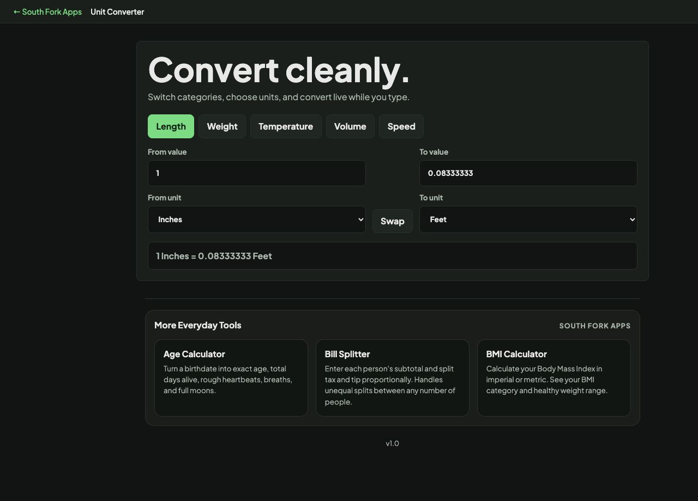

Unit Converter
Convert everyday measurements quickly across length, weight, temperature, volume, and speed without bouncing between niche calculators.
Unit Converter
Unit Converter handles hundreds of units across length, weight, volume, temperature and more, converting between any two in the same category.
How to use it
- Choose a category.
- Enter a value and pick the source and target units.
- Read the converted result.
The conversions that catch people out
Most conversions are a single multiplication, which is why they are easy to automate and easy to get wrong by hand. Temperature is the exception, because the scales have different zero points as well as different degree sizes, so it needs an offset as well as a factor.
Volume is the other trap. A US fluid ounce and an imperial fluid ounce are not the same, and neither is a US gallon and an imperial gallon, which is about 20% larger. Recipes and fuel figures from different countries are not interchangeable.
When it helps
- Converting measurements in a recipe or a manual from another country.
- Working with scientific units in a different system.
- Checking a specification given in units you do not think in.
- Converting for a form that demands specific units.
Common mistakes
- Mixing US and imperial units. They share names and differ in value, especially for volume.
- Converting a temperature difference like an absolute temperature. A 10 degree Celsius change is 18 Fahrenheit, with no offset applied.
- Converting weight and mass loosely. They are different quantities, even though everyday use treats pounds and kilograms as interchangeable.
